about us
關於我們
集智顧問資訊科技與諮詢服務合作夥伴團隊具有充分專業能力，協助客戶利用資訊科技提升市場競爭力與營運效率、降低營運成本與風險，使資訊投資獲致最大的效益。協助企業因應快速成長發展過程中的各項挑戰。集智顧問以「提升企業價值」為服務目標，提供的解決方案涵蓋企業的價值鏈；「與客戶共同成長」為服務理念，與客戶建立長期且深入的合作關係。
集智顧問要做什麼呢？
我們是誰？
集智顧問是一家業務諮詢顧問公司，協助全球公司和企業提供顧問諮詢服務，並與其合作夥伴提供完整，專業的全面智慧資通訊、專案管理與企業診斷訓練服務，專門於客戶的需求進行單獨構建。履行客戶要求的卓越承諾是集智顧問每個人的共同願景。
我們的服務
秉持「創新績效、誠信獲利、創造客戶價值」的價值觀，提供客戶所需的服務及解決方案。
我們的承諾
履行客戶要求的卓越承諾是集智顧問每個人的共同願景，以「知識產品、科技服務、系統整合」三大營運主軸。
Our Approach
“當我們致力於工作時，我們就是您的團隊。我們致力於您的預算，準時交付項目。”
Customized approach
我們相信沒有人像您一樣了解您的業務，因此我們的工作是協助制定您的策略流程。
我們的目標是為您提供幫助，以保持您的最佳狀態並領先於您的對手。
我們將每個解決方案與您的實際工作方式以及您在市場中的獨特地位相對應。
Experienced teams
集智顧問諮詢團隊具有跨行業的經驗。我們的團隊由專家組成，他們經常與組織合作並發展關於業務的新見解，動員組織採取行動，推動切實的底線結果，並使客戶組織更有能力。
集智成功的力量
 管理團隊
羅穎 Angel Lo
集智顧問董事長
做為集智的CEO有兩件事情我要求自己做對,那就是制定正確的公司經營的策略以及做一個好的元帥,儘管集智是一家剛剛起步的顧問公司但我希望可以往有續經營的企業的目標邁進,帶領我們優秀的團隊,台灣起步邁向東南亞國家並且走向世界。
我希望集智能夠提供一個舞台,在一群有市場經驗有活力有夢想的團隊努力下,吸引更多AI相關的人才,凝聚台灣優秀的學界及IT業界的團隊的共識,把我們共同累積的經驗回饋給社會帶領並且培養年輕一代,抓住AI起飛的時機,共同努力,勇敢前行,讓台灣在世界的舞台上再次發光發熱。
張續京 Jason Chang
集智顧問總經理
Jason是一名管理及業務經驗豐富，擁有超過10以上之專案管理及15年的銷售/客戶管理工作，工作服務範圍達整個管理階層功能，包括在財務，市場營銷，銷售，專案及人員管理。在各個不同的行業經驗提供個人及公司產品及服務包括金融，電信和高科技。建立在與客戶及合作夥伴多年來的信任與合作，甚至延伸到以後不同時空的各種業務合作。
身為管理階層，Jason有豐富的經驗不論在設計和實施創新及擴展性的成長策略，以提高公司價值。同時透過不斷新增與客戶高層關係的建立及維護，特別是C層級的客戶群，以不斷增長公司在市場的成長，並達到公司每年收入與利潤的目標和客戶滿意度。透過提供跨職能的領導在整個銷售，財務，策略，運營和業務轉型，建立和啟發整個團隊超過預期達成使命。
■ WSP 副總經理
■ IBM 大中華區資詢總監 (Associate Partner of Consulting)POSA 集團執行長
■ 台灣微軟(Microsoft) 顧問服務事業部 副總經理
■ 惠普科技(HP) 企業服務事業處 AE/AMS 副總經理
■ 電資系統(EDS) 客戶服務處 資深協理
■ 惠普科技(HP) 資訊技術部資深協理
■ 康柏電腦(COMPAQ) 電信事業部協理
■ 飛利浦/源訊科技 (Philips/ORIGIN) 飛利浦中壢廠區/台北服務經理
■ 飛利浦中壢廠 主任工程師
■ 飛福特汽車中壢廠 專案科長 (Project Leader)
李承璋 Vincent Li
集智顧問副總經理
Vincent 威斯康辛州協和大學 CUW 、前市政府中小企業輔導處顧問、恆鼎集團執行長、因萊騰科技台灣、上海執行副總。
Vincent 擁有專案管理之國際專業認證，擁有20年以上的資訊應用系統帶領團隊開發經驗，具有帶領大型系統開發實務經驗，曾參與許多政府資訊系統專案。參與遠通電收 ETC CRM 規劃建置，國防部 Bin MAP 系統規劃建置，財政部二代稅賦改造計畫規劃建置，國軍飛行計劃輔助器規劃建置，跨國公司軟體資產盤點系統規劃建置，數位典藏計畫規劃建置。
顧問群
Dr. Robert Shou Consultant
專業經歷
■ 應用軟體研發與規劃技術顧問
■ SOA 系統架構規劃
■ 大型公文專案主從系統架構規劃、建置
■ 大型公文專案系統整合作業分析
■ 大型公文專案系統程式設計
■ 公文專案專案經理
■ 大型公文專案資料庫結構規劃、分析
■ 行政院研考會共通性服務元件規劃案規劃者
■ 檔案管理局電子檔案長期保存技術研究專案負責人
■ 國家發展委員會檔案管理局電子檔案保存管理機制委託服務案專案負責人
■ 國家發展委員會檔案管理局文書檔案整合技術平台建置委託服務案專案負責人
工作經歷
■ 英福達科技 董事長 (87/10~106/02)
專 長
系統分析 / 訊息服務元件規劃 / 公文相關系統規劃 / 憑証驗證機制規劃 /專案資源調配 / 安全性分析 / 系統效能分析 / 系統推廣方式規劃
呂欣 James Lu
商業顧問、培訓師、企業教練
臺灣正和島營運長
Microsoft 全球培訓部大中華區培訓總監
上海復旦大學軟體學院碩士班特聘講師
Microsoft臺灣大型企業部解決方案部門經理
IBM臺灣軟體事業群銷售工程師部門經理
臺灣陸軍中校 (retired)
英國倫敦大學 大學學院（UCL）電腦科學、生物工程與醫學物理碩士
王錫川 Adam Wang
商業顧問、培訓師、企業教練
巨研科技董事（化學暨醫療儀器代理商）
Microsoft 全球培訓部大中華區培訓總監
臺灣惠普科技產品暨管道事業群總經理
R&D工程師、系統工程師、銷售經理、銷售主管
臺灣政治大學EMBA（企家班）
臺灣科技大學電腦工程研究所碩士
臺灣科技大學電子工程科學士
陳昭廷 Casper Chen
現任中華民國全國商業總會區塊鏈應用及發展研究所教育訓練召集人暨應用服務組委員
現任中華民國軟體協會區塊鏈應用委員會委員
擔任新創區塊鏈公司服務專案顧問，服務對象包含發行票券、紅利點數代幣、資產代幣與穩定幣之專案，並協助商業總會與軟體協會推動區塊鏈相關教育訓練與大型活動，曾任職於國內金控數位金融產品經理，推動行動銀行服務與負責東南亞消費金融策略與產品開發。